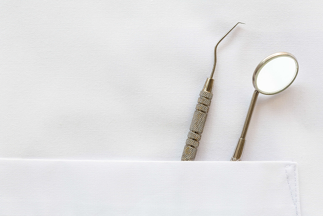

Наши специалисты

Зазовская Елена Владимировна - гл.врач,стоматолог отропед, стоматолог
терапевт.
- Диплом по специальности «Стоматология», квалификация
врач-стоматолог, ГОУ ВПО «Тверская государственная
медицинская академия» от 17.06.2006г.
- Диплом о профессиональной переподготовке от 01.07.2010г.
по специальности «Стоматология ортодонтическая»
- Диплом о профессиональной переподготовке от 07.08.2015г.
по специальности «Стоматология терапевтическая»
- Диплом о профессиональной переподготовке от 16.09.2016г.
по специальности «Организация здравоохранения»
- Сертификат по специальности «Стоматология
ортопедическая» от 05.10.2015г.
- Сертификат по специальности «Стоматология
терапевтическая» от 07.08.2015г.
- Сертификат по специальности «Организация
здравоохранения» от 19.06.2016г.
- Сертификат по специальности «Организация
здравоохранения и общественное здоровье» от 08.07.2025г.
- Сертификат по специальности «Стоматология
ортопедическая» от 10.06.2025г. (Аккредитация от 29.07.2025г)
- Сертификат по специальности «Стоматология
терапевтическая» от 06.05.2025г.(Аккредитация от 29.07.2025г)
Веретюк Ольга Александровна - зубной врач.
- Диплом по специальности «Стоматология», квалификация
зубной врач, Ярославский медицинский колледж от 30.06.1995.
- Сертификат по специальности «Стоматология» от 08.08.2017г.
- Сертификат по специальности «Стоматология» от 22.12.2020г.
- Удостоверение о повышении квалификации «Стоматологическая
помощь населению» от 07.07.2022г.
Кононенко Ольга Викторовна - зубной врач.
- Диплом по специальности «Стоматология», квалификация
зубной врач, Ярославский медицинский колледж от 30.06.1995
- Сертификат по специальности «Стоматология» от 08.08.2017г.
- Сертификат по специальности «Стоматология» от 22.12.2020г.
- Удостоверение о повышении квалификации «Стоматологическая помощь населению» от
22.12.2020г.
- Удостоверение о повышении квалификации «Актуальная работа
зубного врача» от 06.06.2022г.
Кузнецова Светлана Николаевна - зубной врач.
- Диплом по специальности «Стоматология», квалификация
зубной врач, Ярославское медицинское училище Министерства
путей сообщения России от 24.06.2002г.
- Сертификат по специальности «Стоматология» от 08.08.2017г.
- Сертификат по специальности «Стоматология» от 10.05.2023г.
Цыбисов Андрей Владимирович - зубной техник, стоматолог
ортопед..
- Удостоверение
по
специальности
«Зубной
техник»,
квалификация зубной техник, Саранский медицинский колледж,
от 01.07.1992г.
- Диплом о среднем профессиональном образовании с отличием,
Саранский
медицинский
колледж,
по
специальности
«Стоматология ортопедическая», квалификация зубной техник от
20.08.2019г.
- Сертификат специалиста по специальности «Стоматология
ортопедическая», от 30.12.2020г.
- Удостоверение о повышении квалификации «Современные
аспекты ортопедической помощи населению», выдан 30.12.2020г.
- Диплом по специальности «Стоматология», квалификация Врач-
стоматолог, «Медицинский университет «РЕАВИЗ» г. Самара, от
26.06.2024г.